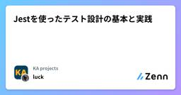
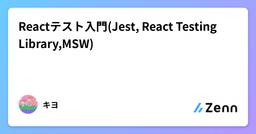
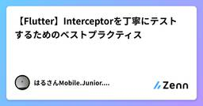

Zennの「Test」のフィード
フィード
【Flutter】path_providerを使ったコードをユニットテストするベストプラクティス
Zennの「Test」のフィード
はじめにFlutterでファイルやデータを保存する際には、デバイスごとの適切な保存先ディレクトリを取得する必要があります。その際によく使われるのが path_provider パッケージです。https://pub.dev/packages/path_providerしかし、このパッケージのメソッドはすべてグローバル関数として提供されており、ユニットテストでモック化するにはひと工夫が必要です。この記事では、path_provider を使ったコードをテストする際の課題と、それを解決するためのモックの方法を具体的に紹介します。 記事の対象者path_provider ...
10時間前
【QA】V&V × Never, Must, Wantについてまとめてみた
Zennの「Test」のフィード
初めに「V&V」と「Never, Must, Want」について勉強する機会があったので、まとめていこうと思います。 V&Vについて(Verification and Validation)V&Vとは、Verification and Validationの略で、日本語だと、検証と妥当性確認である。項目内容Verification（検証）作っているものが「正しく作られているか？」(仕様通りに作られているか)を確認Validation（妥当性確認）作ったものが「正しいものか？」(ユーザーの要求を満たすか)を確認 M...
15時間前
✍️ Jestのタイムアウト延長をサクッと解決
Zennの「Test」のフィード
はじめにJestでテストを書いていると、長時間処理を含むテストが原因で「Exceeded timeout of 5000 ms for a test.」エラーにハマったことはありませんか？本記事では、シンプルにタイムアウト値を伸ばす方法をまとめつつ、特にProjen環境での設定例を紹介します。 タイムアウトエラーとは？デフォルトのタイムアウトが5秒に設定されていると、重めの処理（ネットワーク呼び出し、データベース初期化など）を含むテストで失敗します。Exceeded timeout of 5000 ms for a test.このままでは開発効率が下がるので、タイムア...
1日前
Test Double(stub, spy, mock, fake, dummy)について理解する
Zennの「Test」のフィード
TestDoubleとは自動テストに使用する偽物、代用品。たとえば、データベースや外部サービスの動作を模倣した偽物（テストダブル）を作り、自動テストで使う。TestDoubleの意味でモックという言葉が使われることがあるが、定義上モックはTestDoubleの一部。モック(Mock)、スタブ(Stub)、フェイク(Fake)、スパイ(Spy)、ダミー(Dummy)がある。用途はそれぞれの項目に記載。また、Test Doubleを使う目的の一つに、疎結合なテストの実現があル。 SUTとはSystem Under Testでテスト対象のシステム(オブジェクト) DOC...
2日前
『テストの7つの原則』 〜 パート② 〜
Zennの「Test」のフィード
はじめに現在、アプリ開発者としてプロダクトの持続的な成長やユーザーへのコミットに寄与するためにも、SDLC全体を見渡して開発をすること、および、それにはテストに関する体系的な知識が必要だと考え、それを効率良く学べるJSTQB Foundation Levelの資格試験の勉強をしており、そこでのインプットを記事にしたいと思います。今回はその中でも「テストの7つの原則」の一部について記事にしたいと思います。なお今回記事は 全数テストは不可能こちらの原則について記事にしてみようと思います。 全数テストは不可能とは皆さんがテストをするのはどんな動機からでし...
2日前
コマンドライン実行の動作検証とテストカバレッジ向上（開発日記 No.089）
Zennの「Test」のフィード
!この記事はgemini-2.0-flash-001によって自動生成されています。 関連リンク前回の開発日記 はじめに昨日はセキュリティチェックの実装を行いました。今日は、以前から課題となっていたコマンドライン実行の動作検証（Issue #3）に取り組みます。テストを充実させ、品質向上を目指します！ 背景と目的これまで、コマンドラインインターフェースの動作が十分に検証されていませんでした。Issue #3では、引数の解析やメイン関数の処理など、CLIの主要な機能を網羅的にテストし、安定性を高めることを目的としています。また、CIパイプラインの改善も行い、セキュリ...
4日前

Jestを使ったテスト設計の基本と実践
Zennの「Test」のフィード
1. Jest とはJest は、Facebook 社が開発した JavaScript 用のテスティングフレームワークです。シンプルな設定で利用できる一方、モックやタイマー制御などの高度な機能も備えています。Jest の主な特徴は以下の通りです：ゼロコンフィグ：設定なしですぐに使用開始できるスナップショットテスティング：UI コンポーネントの変更を検出モック機能：外部依存の制御と分離並行テスト実行：高速な実行環境コードカバレッジレポート：テストの網羅性確認 2. テスト設計の考え方 2.1 テストケースの洗い出し方効果的なテストを書くためには、適切なテスト...
4日前
品質とは何か？を考えたときの品質エンジニアという仕事
Zennの「Test」のフィード
「品質とは何か？」社内のQAエンジニアを担当している方からの問われたときに、素直に「何だろう」となった。「バグがないこと」「テスト密度が基準値内であること」「ユーザの期待値を満たすこと」みたいな答えがパパっと浮かんできたが、どうやらそれは本質ではない。現在、ソフトウェア品質エンジニア（QAエンジニア）という職能は、コードを書かない開発者として進化を遂げつつある。本記事では、品質の概念整理から、QAという専門職の本質、そしてキャリアとしての価値までを横断的に言語化する。 ✔ 品質とは「成果の保証」である従来、品質とは「要件を満たしているかどうか」を指していた。しか...
5日前
AI が生成する大量の Python コードの品質を管理するための pyproject.toml 設定
Zennの「Test」のフィード
AI が生成する大量のコードをレビューできますか？チームで Python の開発を行うとき、ChatGPT などで作られたコードをレビューすることになることも増えてきました生成 AI によってコードは大量生産することが可能になりましたが、レビューのプロセスでその大量のコードをチェックすることができる体制は整っていますでしょうか？レビューにも AI を使う手法もありますが、次の問題があります:料金ハルシネーション による誤検知やバグの見逃しAI を使う前に、まずはアルゴリズムによるレビューの自動化を行うことが重要です 全体的な方針 最低でも Ruff は使い...
6日前

Reactテスト入門(Jest, React Testing Library,MSW)
Zennの「Test」のフィード
はじめに普段はReact.jsやNext.jsを使用していますが、テストを書いたことがなかったので自分の為の忘備録、はじめてReactでテストを書く方のためになればと思い本記事を書かせていただきました。 テストとはアプリケーションの動作を検証するものであり、品質や信頼性を高めるために行います。テストには大きく分けてStatic test,Unit test,Integration test,E2E testがあります。下記の下に行けば行くほど実装コストが高くなり、信頼性が高くなります。Static test(静的テスト)コードを実行せずにするテストのことです。以下の...
6日前

【Flutter】Interceptorを丁寧にテストするためのベストプラクティス
Zennの「Test」のフィード
はじめにdioのinterceptorの実装方法については、以前こちらの記事で解説しました。https://zenn.dev/harx/articles/6460e36ea3f6f2一方で、 Interceptor のテストを行うには少々工夫が必要です。この記事では、実践的なテスト手法とその背景にある考え方を具体的に紹介します。「どこまでテストすべきか」「何をどうモックすべきか」といった疑問を持った方の助けになれば幸いです。 記事の対象者Flutter で Dio を使ってネットワーク層を構築している方自作の Interceptor をしっかりテストしたい方d...
6日前
ローカルでsupabaseテスト環境を分離する
Zennの「Test」のフィード
はじめに本記事では、ローカル開発時にSupabaseのテスト環境を開発環境と分離する方法について解説します。テストの信頼性向上やデータ汚染防止のため、テスト専用のSupabaseインスタンスを用意する方法や、実際の構築手順、運用上の注意点をまとめます。 前提条件この記事では、ローカル開発環境にSupabase CLIがインストールされており、supabase コマンドを使用してローカル環境のSupabaseを管理していることを前提としています。Supabase CLIを使用すると、以下のような利点がありますローカル環境でSupabaseプロジェクトを構築可能マイグレー...
7日前

自分で作ったプログラムを自分でテストするって合ってるの？
Zennの「Test」のフィード
自分で作ったプログラムを自分でテストすることは、ソフトウェア開発の現場でも一般的であり、むしろ推奨されるプロセスです。主な理由は以下の通りです：単体テストは開発者自身が行うべきプログラムのテストには「単体テスト」「結合テスト」「総合テスト」などがありますが、このうち単体テスト（自分が書いたコードが仕様通りに動くかの確認）は、開発者自身が行うのが基本です。自分の実装の正しさを保証できる自分でテストすることで、実装が仕様通りに動作しているかを確認でき、バグやミスを早期に発見できます。テストコードの自動化で品質向上・効率化テストコードを書くことで、動作確認の自動化や将...
9日前
Playwright で Clerk をテストするガイド【Next.js】
Zennの「Test」のフィード
はじめに先日、Next.js の勉強会で、Clerk による認証サービスの活用を取り上げました 🔐認証は、Web アプリケーション開発において、特に重要な要素の一つでありながら、テストが複雑な部分でもあります。とはいえ、複数のページにまたがる認証フローは、手動テストだけでは不十分になりがちです。今回は、Clerk の認証機能を Playwright でテストする方法について調査したので、基礎的な内容をまとめました！時間の節約になれば、嬉しいです 🙌 Clerk とは？https://zenn.dev/b13o/articles/tutorial-clerkもし、C...
9日前
2025年最新！初心者QAエンジニアが選ぶ自動化テストツール10選
Zennの「Test」のフィード
はじめにこんにちは！kaitoです。正直、テストって最初は「ひたすらポチポチする作業でしょ？」って思ってたんですよ。でも、プロジェクトが進むにつれて、手動テストの限界を痛感しまして...。特に、ちょっとコードを修正するたびに、何十、何百ものテストケースを全部手で確認するなんて、もう無理！時間もかかるし、ミスも出るし、何より心が折れそうになるんです（笑）。そんな時に出会ったのが、「自動化テストツール」でした。最初は「難しそう...」ってビビってたんですけど、実際に使ってみたら、これがもう革命的で！一度設定すれば、あとはツールが勝手にテストしてくれるんですから。おかげで、テストにか...
10日前
モデルは磨く。レビューは学び合い。
Zennの「Test」のフィード
モデルをレビューするということレビューの場面では、つい細部に目を凝らしてしまうことがあります。テストケースであれコードであれ、「あれも、これも」とパターンや分岐を一つずつ確認していくうちに、気づけばレビュワー自身が設計をやり直しているような状態に陥る──これは多くの人にとって馴染みのある経験ではないでしょうか。私自身、テストケースや探索的テストのチャーターをレビューする際、意図せず細部に立ち入りすぎてしまったことが何度もあります。その結果、レビューに非常に時間がかかるだけでなく、深いドメイン知識や仕様の理解が求められるため、他チームや新人が入り込みづらくなるという課題も感じてい...
12日前
テストコード内のコメントに絵文字を使うとちょっと見やすい✅️
Zennの「Test」のフィード
小ネタです。ちょっと複雑なテストの挙動を説明するために、コメントをつけることがあると思います。そのコメント内に絵文字をつけるとちょっと見やすい、という話です。こちらが絵文字なし。import { UserService } from 'path/to/service'import { createMockUser } from 'path/to/testUtils'describe("UserService", () => { it("getSomeone", () => { // 論理削除されているので無視される crea...
12日前
Webアプリの期待結果をHTTPレスポンスステータスコードで考える
Zennの「Test」のフィード
テストケースの分類というと「正常系」「準正常系」「異常系」といったものがあると思いますが、私は細かい機能のテストにおいてはこれらの言葉はあまり使わずにHTTPのレスポンスステータスコードで結果を分類してテストケースを考えることが多いです。利点としては、HTTPレスポンスステータスコードは定義がはっきりしており 「何をもって"正常系"とするか？」といった解釈の食い違いが発生しないことが挙げられます。 有名どころのHTTPレスポンスステータスコードご存知の方も多いとは思いますが、主にWebアプリケーションを開発する上で比較的登場頻度の高いHTTPレスポンスステータスコードを挙げます。...
12日前